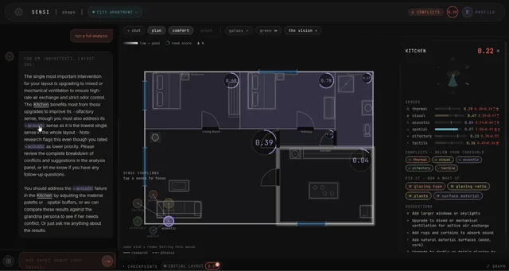
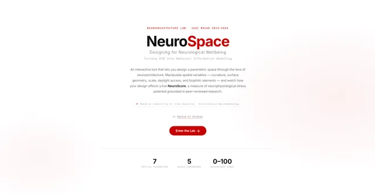

P-101 · MACAD STUDIO · TEAM OF 4 · 2026
Sensi
Comfort is usually the thing we hope shows up after the design is done. Sensi makes it a design layer.
So I build the missing tools. I’m Emilie El Chidiac, Design Technology Architect. NeuroSpace reads a floor plan and scores its effect on the mind; Sensi, winner at the MaCAD Awards 2026, makes comfort a design layer.
COMPUTATIONAL DESIGN · DESIGN TECHNOLOGY · MACAD @ IAAC

Comfort is usually the thing we hope shows up after the design is done. Sensi makes it a design layer.

Move a slider, watch the score respond. It’s BIM, reframed as Behavior Information Modeling.